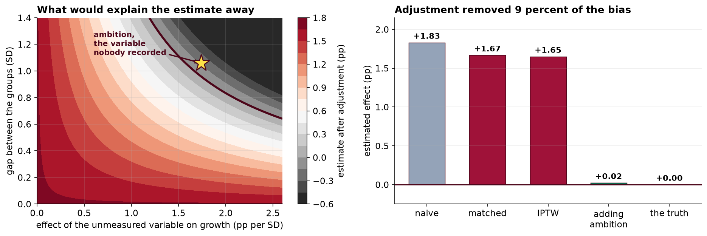

Propensity Score Matching and Weighting with a Sensitivity Analysis for Unmeasured Confounding
An observational evaluation in which covariate balance is achieved to a high standard and the estimate remains almost entirely confounded.
Objective. To estimate the effect of a voluntary management-training program on 12-month salary growth, and to characterize the sensitivity of that estimate to unmeasured confounding. Methods. Propensity scores were estimated by logistic regression on six pre-enrollment covariates. The sample was trimmed to common support and 1:1 nearest-neighbor matching was performed on the logit of the score without replacement, with a caliper of 0.2 SD. Balance was assessed by standardized mean differences against a target of 0.10. Inverse probability of treatment weighting targeting the ATT was fitted as a cross-check. Sensitivity was assessed by an E-value and by a two-parameter bias surface. Results. The unadjusted difference was +1.829 pp (95% CI +1.675 to +1.983). Matching produced 1,220 pairs with a maximum absolute SMD of 0.025 across all covariates, and an estimate of +1.667 pp (SE 0.091). IPTW gave +1.649 pp. Adjustment altered the estimate by 8.9% of the unadjusted difference. The E-value was 3.35. Conclusion. Covariate balance was achieved to a standard well beyond convention and the adjusted estimate remains consistent with a null effect under an unmeasured confounder of unremarkable magnitude. In this instance the data-generating process is known and the true effect is zero, so the residual is entirely selection.
1. Design and estimand
The estimand is the average treatment effect on the treated. This is the appropriate target where the policy question concerns the value delivered to those who took up a voluntary program, rather than what would occur under universal assignment. The distinction is material: an ATE would additionally require extrapolation to employees whose propensity to enroll is very low, for whom the data contain little information.
Identification rests on two conditions. Positivity is assessed directly and is satisfied. Conditional ignorability given the six covariates is untestable, is almost certainly false here, and is the subject of section 6.
2. Data preparation
| Stage | n | Note |
|---|---|---|
| HR export | 4,055 | Extract executed twice |
| Deduplicated | 4,000 | One record per employee |
| Complete cases | 3,880 | 90 missing prior rating; 30 tenure sentinels of −1 voided |
| On common support | 3,875 | 5 outside the overlapping propensity range |
| Matched | 2,440 | 1,220 pairs; 27 treated units unmatched within the caliper |
Complete-case analysis is adopted and disclosed rather than defended. Its validity requires missingness to be unrelated to the outcome conditional on the covariates, which has not been established. Multiple imputation would be the appropriate treatment and is deferred.
3. Propensity model and overlap
Logistic regression on age, tenure, prior rating, prior salary, department and education. Estimated scores range from 0.101 to 0.640 among the treated and 0.084 to 0.641 among controls, with means of 0.348 and 0.309. Overlap is extensive and only five units fall outside common support.
Good overlap is a substantive finding and not merely a diagnostic. It indicates that enrollment was not confined to a region of covariate space unoccupied by non-participants, which is the circumstance under which matching estimators become heavily dependent on functional form.
4. Matching and balance
| Covariate | SMD before | SMD after |
|---|---|---|
| Prior performance rating | +0.285 | +0.012 |
| Education: postgraduate | +0.167 | −0.019 |
| Tenure | −0.158 | −0.003 |
| Education: high school | −0.157 | +0.015 |
| Department: Sales | +0.109 | −0.013 |
| Department: Operations | −0.107 | +0.016 |
| Age | −0.081 | +0.025 |
| Prior salary | +0.011 | −0.012 |
| Department: Support | −0.086 | −0.022 |
Balance is achieved to approximately four times the conventional tolerance on every covariate. Presented in isolation, this table constitutes the principal evidence offered in a large proportion of the published observational literature.
5. Effect estimates
| Estimator | Estimate (pp) | SE | 95% CI |
|---|---|---|---|
| Unadjusted | +1.829 | 0.079 | [+1.675, +1.983] |
| 1:1 caliper matching | +1.667 | 0.091 | [+1.489, +1.844] |
| IPTW, ATT weights | +1.649 | — | — |
Adjustment altered the estimate by 0.163 pp, or 8.9% of the unadjusted difference. Two estimators resting on the same conditioning set agree closely. This concordance is informative about specification and computation and carries no information about the identifying assumption, since both estimators are confounded identically by any omitted variable.
6. Sensitivity to unmeasured confounding
The standardized effect in the matched sample is d = 0.745. Applying the approximation RR ≈ exp(0.91d) gives an approximate risk ratio of 1.970 and an E-value of 3.35. An unmeasured confounder would therefore require associations of approximately 3.35 with both treatment and outcome, conditional on the measured covariates, to reduce the estimate to the null.
It is important to interpret this correctly. An E-value of this magnitude is frequently reported as evidence of robustness. It establishes only the magnitude required, not the plausibility of a confounder attaining it, which is a question of subject-matter knowledge and cannot be resolved from data that exclude the variable.
| Effect of U on outcome (pp per SD) | Required treatment–control gap in U (SD) |
|---|---|
| 0.80 | 2.08 |
| 1.20 | 1.39 |
| 1.75 | 0.95 |
| 2.20 | 0.76 |
None of these combinations is extreme for a workplace characteristic associated with both volunteering for development and subsequent advancement.

7. The known data-generating process
This dataset is simulated and the generating model is supplied with it, which permits an assessment not available in practice. The true program effect is exactly zero. An unmeasured characteristic, denoted ambition, enters both the enrollment model and the outcome model. In the matched sample its standardized difference is +1.060, approximately forty times the largest imbalance on any measured covariate. Including it in an outcome regression reduces the treatment coefficient from +1.626 pp to +0.023 pp (SE 0.060, p = 0.70).
The exercise therefore demonstrates a specific and uncomfortable point. Matching removed 8.9% of the confounding because the measured covariates were nearly orthogonal to the variable that governed selection. Nothing in the diagnostics distinguishes this situation from one in which the covariates capture the selection mechanism entirely, and the balance table is identical in both cases.
8. Discussion
Three conclusions follow. First, covariate balance is a property of the covariates included and should never be presented as evidence of exchangeability without an explicit statement of what is absent. Second, sensitivity analysis is not supplementary. It is the only component of the analysis that addresses the identifying assumption, and reporting an observational effect estimate without one implicitly asserts that no confounder exists.
Third, the appropriate remedy is design rather than estimation. Randomizing allocation where a voluntary program is oversubscribed converts the problem into an experiment at negligible cost, and recording a pre-enrollment proxy for motivation would give the adjustment purchase on the mechanism that matters. Neither is a statistical innovation; both are decisions taken before data collection.
A limitation of the sensitivity framework used here is that it treats a single unmeasured confounder with a linear effect. Multiple correlated confounders, or non-linear dependence, are not represented, and the bounds should be read as illustrative of magnitude rather than exhaustive.
9. Conclusion
Matching on six pre-enrollment covariates achieved a maximum standardized imbalance of 0.025 and yielded an ATT estimate of +1.667 pp (95% CI +1.489 to +1.844), closely reproduced by IPTW at +1.649 pp. The E-value is 3.35. The true effect is zero and the residual estimate is entirely attributable to an unmeasured characteristic with a standardized between-group difference of 1.060 after matching. The analysis should be reported as consistent with a null effect and as incapable of excluding one.
References
- Rosenbaum, P. R., & Rubin, D. B. (1983). The central role of the propensity score in observational studies for causal effects. Biometrika, 70(1), 41–55.
- Rosenbaum, P. R. (2002). Observational Studies (2nd ed.). Springer.
- Austin, P. C. (2011). An introduction to propensity score methods for reducing the effects of confounding in observational studies. Multivariate Behavioral Research, 46(3), 399–424.
- VanderWeele, T. J., & Ding, P. (2017). Sensitivity analysis in observational research: introducing the E-value. Annals of Internal Medicine, 167(4), 268–274.
- Stuart, E. A. (2010). Matching methods for causal inference: a review and a look forward. Statistical Science, 25(1), 1–21.
- Imbens, G. W., & Rubin, D. B. (2015). Causal Inference for Statistics, Social, and Biomedical Sciences. Cambridge University Press.
- Chernozhukov, V., Chetverikov, D., Demirer, M., et al. (2018). Double/debiased machine learning for treatment and structural parameters. The Econometrics Journal, 21(1), C1–C68.
- King, G., & Nielsen, R. (2019). Why propensity scores should not be used for matching. Political Analysis, 27(4), 435–454.
Reproducibility
The dataset (capstone-propensity-score-matching.xlsx) contains the HR export with its data-quality faults intact, the analysis plan as written before outcome linkage, and a separate sheet holding the unmeasured confounder and the true effect. An executable notebook accompanies the chapter and reproduces every estimate, table and figure, implementing caliper matching without replacement directly rather than through a matching package. Analyses use NumPy, pandas, SciPy, scikit-learn, statsmodels and Matplotlib.